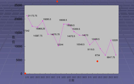
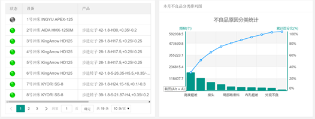

航天云网mes
航天云网云MES软件模块与企业需求的匹配。软件模块可以全面覆盖企业的需求。
数据采集：DCS设备互联、OPC设备数据采集、非数控设备数据采集。
工艺管理：工艺线路、工艺参数、工艺文件。
计划排程：生产计划导入、产能标定、高级排程、紧急插单、生产调度。
过程管理：实时产量计算及上报、实时物料消耗上报、安灯系统。
质量管理：品检项目、品检指标、品检方案、品检记录、样品留存、权限控制、动态报表、质量分析。
设备管理：设备档案、设备检修、备品备件、清理清洁、隐患排查与整改、设备润滑、设备点检、设备运行记录。
能源管理：计量用户、计量测点、能源消耗数据自动采集或手工录入、能源统计。
过程监控：生产监控指标设定、事件触发通知相关责任人、异常处理跟踪，仓库收发监控。
生产统计：生产日报、生产周报、生产月报。
企业号：Test 账号：11101
密码：02038870403a
使用平台
- BYD的ERP及MES一体化流程
- 软件模块
- 管理需求及实现方法
- 工艺管理
- 计划排程
- 过程管理
- 质量管理
- 设备管理
- 能源管理
- 过程监控
- 生产统计
软件模块
航天云网MES软件模块与BYD需求的匹配。软件模块可以全面覆盖BYD的需求。
1.数据采集：DCS设备互联、OPC设备数据采集、非数控设备数据采集。
2.工艺管理：工艺线路、工艺参数、工艺文件。
3.计划排程：生产计划导入、产能标定、高级排程、紧急插单、生产调度。
4.过程管理：实时产量计算及上报、实时物料消耗上报、安灯系统。
5.质量管理：品检项目、品检指标、品检方案、品检记录、样品留存、权限控制、动态报表、质量分析。
6.设备管理：设备档案、设备检修、备品备件、清理清洁、隐患排查与整改、设备润滑、设备点检、设备运行记录。
7.能源管理：计量用户、计量测点、能源消耗数据自动采集或手工录入、能源统计。
8.过程监控：生产监控指标设定、事件触发通知相关责任人、异常处理跟踪，仓库收发监控。
9.生产统计：生产日报、生产周报、生产月报。
管理需求及实现方法
包括DCS设备互联、OPC设备数据采集、计量检斤数据采集、非数控设备数据采集等。
1.数据采集
OPC数据采集内容包括生产过程关键数据和能源数据，OPC数据接口由业主提供，如果OPC数据中缺少某些数据，可留在后期进行完善，等数据完善后仍然通过OPC接口进行采集。
其他接口方案，当有些设备无法集成到控制系统，则需将设备的接口统一成 Modules TCP。
数据来源：OPC（DSC）、第三方系统。本方案不包括OPC服务建设和DSC数据结构分析。
2.非数控设备的设备状态数据采集
通过航天云网MES配套的数采终端机加装传感器的方法，实现采集设备的工作和关机状态。
终端机通过专用的无线网络进行数据传输。
软件报价未包括数采终端采购及加装传感器的费用。
工艺管理
工艺管理包括工艺线路、工艺参数、工艺文件等与生产加工工艺相关的管理功能。
1.产品根据不同分生产要求可以建立多个工艺线路版本，工艺线路包含工序、生产资源、生产用时、品检方案、物料耗用等。
2.工序的各个加工环节的工艺参数，包括设备、刀模、环境等。
3.可以与PLM数据无缝连接，关联打开工艺文件，包括图纸、工艺说明等。
4.工艺文件可以通过平板电脑或车间工控电脑查看，实现作业资料的无纸化。
计划排程
计划排程包括生产计划导入、紧急插单、生产调度等，可以根据多种约束条件自动排定生产计划。
1.生产计划导入，自动从ERP系统导入生产订单任务。
2.紧急插单，提供插单重排，根据实际生产数据重新排定生产计划。
3.生产调度，排定的生产任务安排具体的班组和设备。
过程管理
实时产量计算及上报、实时物料消耗上报、安灯系统。
1.物料消耗
1.采集生产过程中的矿石量、液碱、循环母液、石灰等物料的实际消耗量。
2.库存统计：采集检斤系统的进厂量、盘存量、消耗量。
3.盘存：针对每种物料建立盘存数据库，盘存量作为期初数据，进厂量作为入库，消耗量为出库，根据盘存量、消耗量、进厂量计算库存量
4.物料消耗：设置计算公式，根据进料量、品检分析数据、时间周期等信息计算消耗量。
2.实时产量
1.实产计算模型：设置参与计算的输入指标（用户可自定义）、输出指标（实产）、计算公式（用户可自定义），为实产计算提供支撑。
2.实产计算：系统根据采集的数据，通过模型的运行，按照时间周期计算实产。
3.商产：管理氧化铝、氢氧化铝及其他副产品的产量、发货量、库存量。
4.盘存：建立氢氧化铝、氧化铝盘存数据库，盘存量作为期初数据，每天的产量作为入库，发货量为出库，根据盘存量、产量、发货量计算产品库存量。
5.产量数据：根据皮带秤数据计算得出。
6.出库数据：从无人值守系统采集。
质量管理
质量管理包括：检验项目、检验指标、检验方案、检验记录、权限控制、动态报表。
设备管理
设备管理包括：设备档案、设备检修、备品备件、清理清洁、隐患排查与整改、设备润滑、设备点检、设备运行记录等。
1.设备管理
设备稳定运行是保证生产稳定的关键，建立设备运行管理体系，对设备的制度运行、计划停车、计划检修、故障停车、设备利用率、设备负荷、运行效率、故障分析等运行状况进行精细化管理。保障设备经济、可靠运行。
2.设备分类
系统将设备按照用途、工序、使用单位对设备进行分类管理，自定义多级分类，以目录树形式管理设备分类。
3.设备档案
1.设备检修
检修计划：登记设备检修计划，管理检修项目、时间、责任人等信息。
检修记录：登记实际检修结果，包括：完成实际、检修结果等信息。
2.备品备件管理
备件需求计划：编制备件需求计划，包括：备件名称、规格型号、计划类型（计划内、计划外）、数量、最迟到货时间等信息。
到货进度跟踪：计划提出后，采购部门根据计划组织采购（结合库存情况），过程中录入采购进度（招标完成、合同已签订、在途、到货等状态），需求单位可实时查阅备件的采购进度。
备件更换台账：每台设备的不同备件设置更换周期，依据更换周期提醒需要更换的备件，备件更换完毕输入跟换结果，生成备件更换台账。
3.设备清理清洗
输入设备清洗记录，生成设备清洗台账。
4.隐患排查与整改
隐患分类：设备隐患分类，隐患等级。
隐患登记：发现问题后登记隐患信息（支持图文上传），指定责任人，限期整改。
隐患整改：责任人收到整改任务后，按照要求整改，整改完毕后提交整改结果。
隐患验证：对整改的结果进行验证，未完成整改的重新生成一个整改任务。
5.设备润滑
润滑标准：针对不同的设备设置润滑标准，包括：润滑部位、润滑周期、油品标号、油量、润滑方法等。
润滑提醒：系统根据润滑周期提醒需要润滑的设备、需要准备的润滑油及油量。
润滑记录：润滑完毕后输入润滑记录，系统根据上次润滑时间计算下次润滑时间。
润滑台账：根据润滑记录生成润滑台账。
6.特种设备管理
7.设备点巡检
能源管理
1.能源管理
计量测点：管理水、电、风、蒸汽、燃气等能源介质的计量装置。将各类计量仪表输入到系统，建立测点与DCS之间的关联关系。
计量用户：每一个独立核算的（或考核的）用能单位为一个计量用户，系统建立计量用户与测点之间的关系，设置计量计算公式，为用能核算提供支撑。
能源数据采集：自动（或手动）采集用能数据，按照实际周期（按班、日、月）记录每个仪表度数，经过计算得出每个计量装置的能耗数据。
能源统计：按照计量用户、时间周期统计各单位的用能数据，为能源考核、能耗分析系统支撑。

过程监控
过程监控包括生产监控指标设定、事件触发通知相关责任人、异常处理跟踪，仓库收发监控。
1.生产监控指标设定
设置各个DSC采集数据的监控指标，用于判定是否出现异常，指标包括固定值指标和连续波动差异指标。
2.事件触发通知相关责任人
定义异常事件的处理流程，包括报警方式、责任人、监督人员等。
3.异常处理跟踪
触发异常后，系统自动记录异常信息，并发起异常流程，通知相关人员进行处理。

生产统计
系统建立生产统计模版，实际数据按照统计模版进行数据的采集。数据采集分自动采集和手工上报两种模式。自动采集的主要从控制系统、能源系统、计量系统等系统采集。统计数据与生产计划保持一致，通过计划与实际数据的对比找出生产存在的薄弱环节。主要功能包括：数据上报、数据审核、统计报表、统计模板、图表分析等。